Добрый день, уважаемые слушатели, гости Петербурга и все, кто интересуется культурной жизнью Серебряного века. Наш сегодняшний маршрут состоит из шести точек, и вам понадобится около двух с половиной часов. Мы начнём у гостиницы «Астория», затем заглянем в ресторан «Вена» с его живыми стенами и механический буфет «Квисисана». Далее спустимся в артистические подвалы — легендарную «Бродячую собаку» и «Привал комедиантов», а завершим маршрут у «Башни» Вячеслава Иванова — места, где поэты спорили о судьбе России до рассвета. Приготовьтесь проникнуться духом Серебряного века — мы начинаем.
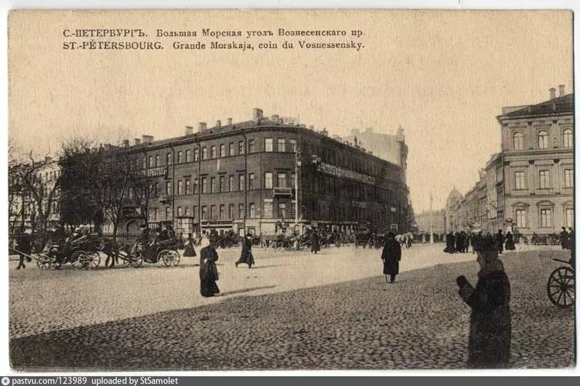
🏨
Загрузите фото: photos/d1s01_astoria.jpg
'"
alt="Гостиница Астория">
Гостиница «Астория» · Большая Морская, 39
01
Начало маршрута
Гостиница «Астория»
В. Маяковский · «Последняя петербургская сказка»
Большая Морская, 39
🎙 Аудиогид
Гостиница «Астория»
0:00
Вы стоите перед гостиницей «Астория» на Большой Морской улице, 39. Поднимите взгляд на этот строгий фасад — он ощущается как уверенный и чуть надменный. Именно таким и должен был быть Петербург образца 1912 года: последний расцвет перед катастрофой.
«Астория» строилась как намеренный вызов старому городу. Архитектор Фёдор Лидваль возвёл здание буквально в нескольких метрах от Исаакиевского собора и Медного всадника. Маяковский не мог пройти мимо этой дерзости: в его воображении Пётр Великий смотрит на постройку и думает о пире — а рядом уже вырастает новый мир, шумный и беспардонный.
Добавим один факт, о котором мало говорят: в феврале 1917 года «Астория» стала одним из главных штабов революционных событий. Во время уличных боёв по фасаду гостиницы стреляли — следы от пуль потом долго заделывали.
А в годы Второй мировой Гитлер якобы уже напечатал пригласительные билеты на банкет в «Астории» в честь взятия Ленинграда. Но банкет не состоялся. Город выстоял. Так и «Астория» стоит до сих пор.
Загрузите audio/d1s01.mp3 в папку проекта на GitHub
"
Стоит император Петр Великий, думает: «Запирую на просторе я!» — а рядом под пьяные клики строится гостиница «Астория».
В. В. Маяковский · «Последняя петербургская сказка»
Построена в 1912 году по проекту Лидваля в стиле неоклассицизма с элементами модерна. Стала знаковым местом Серебряного века. Пережила обе революции 1917 года. Сегодня — один из главных символов исторического Петербурга.
🚶 Переход · ~5 минут
Астория → Вена
0:00
От гостиницы «Астория» двигайтесь по Большой Морской в сторону Невского проспекта. Дойдя до перекрёстка с Гороховой улицей, остановитесь — угол Гороховой, 8 и Малой Морской, 13 и есть место ресторана «Вена».
◆
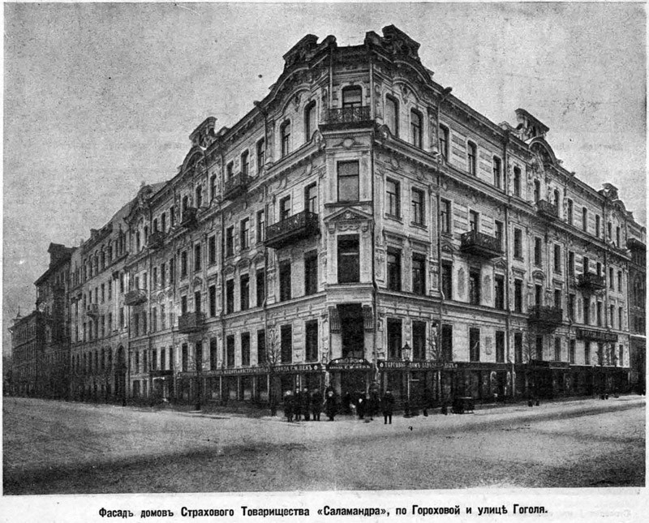
🍽️
Загрузите фото: photos/d1s02_vienna.jpg
'"
alt="Ресторан Вена">
Гороховая, 8 / Малая Морская, 13 · Место ресторана «Вена»
02
Точка маршрута
Ресторан «Вена»
М. Горький · «Жизнь Клима Самгина»
Гороховая, 8 / Малая Морская, 13
🎙 Аудиогид
Ресторан «Вена»
0:00
Мы находимся на углу Гороховой и Малой Морской. Здесь стоял ресторан «Вена» — самое странное заведение дореволюционного Петербурга.
Владелец Иван Соколов придумал правило: каждый обедающий должен был оставить что-нибудь своё — не деньги, а творчество. Автограф, рисунок, четверостишие. Со временем залы превратились в живой музей: тысячи автографов и набросков на стенах.
Соколов печатал в газетах объявления: «после театра всех известных писателей можно видеть в "Вене"». Горький, Куприн, Блок сидели здесь — и публика могла прийти посмотреть на них живьём.
Александр Куприн однажды явился сюда в компании живого медвежонка и посадил его за стол. Медвежонок вёл себя прилично. Один из официантов упал в обморок. «Вена» не сохранилась — но если встать на этом углу и закрыть глаза, почти слышишь споры, смех и звон посуды.
Загрузите audio/d1s02.mp3 в папку проекта
"
...в нём показывали не шансонеток, плясунов, рассказчиков анекдотов и фокусников, а именно литераторов.
М. Горький · «Жизнь Клима Самгина»
Дореволюционный ресторан — настоящий «клуб» культурной элиты. Завсегдатаями были Горький, Блок, Куприн. Владелец Соколов обязывал посетителей оставлять творческие автографы на стенах. Сегодня не сохранился.
🚶 Переход · ~13–15 минут
Вена → Квисисана
0:00
Сверните на Малую Морскую, выйдите на Невский проспект и поверните направо. Наш ориентир — дом №46 по Невскому, за каналом Грибоедова, напротив Гостиного Двора, на углу с Малой Конюшенной улицей.
◆
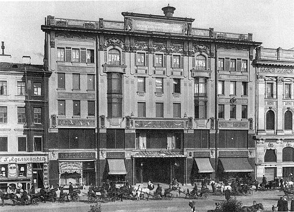
☕
Загрузите фото: photos/d1s03_kvisisana.jpg
'"
alt="Квисисана">
Невский проспект, 46 · Место кафе «Квисисана»
03
Точка маршрута
Кафе «Квисисана»
О. Мандельштам · «Четвёртая проза»
Невский проспект, 46
🎙 Аудиогид
Кафе «Квисисана»
0:00
Следующая остановка — Невский проспект, 46. Представьте: начало XX века, здесь работает кафе с итальянским названием «Квисисана» — что значит «здесь исцеляются». Главной сенсацией были буфеты-автоматы: опускаешь монету, дверца открывается — берёшь сам, без официантов. По меркам 1900-х это было как сегодня роботы-официанты.
Мало кто знает: «Квисисана» была частью целой европейской сети — от Берлина до Варшавы. Петербургская была одной из самых престижных. Сюда ходили не потому что дёшево — а потому что модно и необычно.
Мандельштам упоминает её вскользь — «толпились, как в буфете Квисисана». Это говорит о многом: кафе было настолько привычной частью литературного Петербурга, что не требовало объяснений. Как сегодня сказать «как в Starbucks» — и все поймут.
Загрузите audio/d1s03.mp3 в папку проекта
"
...где толпились, как в буфете Квисисана, какие-то призрачные фигуры.
О. Э. Мандельштам · «Четвёртая проза»
Популярнейшее место встреч богемы начала XX века. Часть крупной европейской сети. Прославилось механическими буфетами-автоматами — технической новинкой эпохи.
🚶 Переход · ~5 минут
Квисисана → Бродячая собака
0:00
Вернитесь немного назад и сверните направо на Михайловскую улицу. Пройдя один квартал, сверните налево на Итальянскую. Ваша цель — дом №4: войдите во второй двор через две арки, спуститесь в подвал справа.
◆
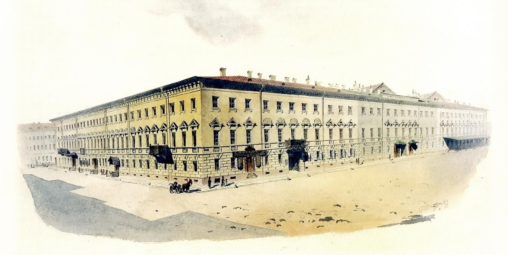
🐕
Загрузите фото: photos/d1s04_sobaka.jpg
'"
alt="Бродячая собака">
Итальянская, 4 · «Подвал Бродячей собаки»
04
Точка маршрута
«Подвал Бродячей собаки»
В. Князев · «Гимн "Бродячей собаки"»
Итальянская, 4
🎙 Аудиогид
«Подвал Бродячей собаки»
0:00
Войдите во второй двор и спуститесь вниз. В ночь с 31 декабря 1911 на 1 января 1912 здесь открылся «Подвал Бродячей собаки» — и эта новогодняя ночь стала одной из важнейших в истории русской культуры XX века.
Деление на «своих» и «чужих» было официальным. Поэты и художники входили бесплатно. Обычных зрителей называли «фармацевтами» — и это слово стало настоящим оскорблением: человек без творческой жилки, пришедший поглазеть.
Именно здесь Ахматова впервые читала стихи публично — и зал замолкал. Здесь Гумилёв спорил об акмеизме, Хлебников сочинял прямо за столом.
Кабаре просуществовало всего три года и два месяца — с января 1912 по март 1915-го. Закрыли за слишком вольный дух в военное время. Сегодня арт-подвал восстановлен.
Загрузите audio/d1s04.mp3 в папку проекта
"
Во втором дворе подвал, В нём — приют собачий. Каждый, кто сюда попал — Просто пёс бродячий. Но в том гордость, но в том честь, Чтобы в тот подвал залезть!
В. Г. Князев · «Гимн "Бродячей собаки"»
Литературно-артистическое кабаре, 1911–1915. Ахматова, Гумилёв, Маяковский, Хлебников. Символ богемы Серебряного века. Сегодня восстановлено.
🚶 Переход · ~10 минут
Бродячая собака → Привал
0:00
Пройдите по Итальянской улице до набережной канала Грибоедова. По пути можете сделать паузу у Спаса на Крови. Перейдите Мойку по Мало-Конюшенному мосту — дом №7 по Марсовому полю прямо перед вами.
◆
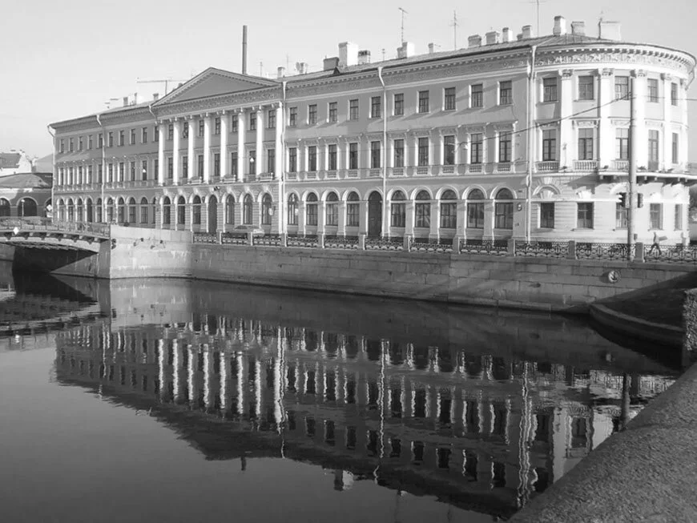
🎭
Загрузите фото: photos/d1s05_prival.jpg
'"
alt="Привал комедиантов">
Марсово поле, 7 · «Привал Комедиантов»
05
Точка маршрута
«Привал Комедиантов»
Г. Иванов · «Петербургские зимы»
Марсово поле, 7
🎙 Аудиогид
«Привал Комедиантов»
0:00
Марсово поле, 7. В 1916 году идёт война, в городе карточки и похоронки. И именно в этот момент художники открывают в подвале новое кабаре — «Привал Комедиантов».
Оформление было настолько роскошным, что казалось безумием на фоне военного времени. Судейкин расписал залы в чёрно-красные тона с золотом, Григорьев покрыл стены парижскими фресками. Деньги вкладывали сами художники и меценаты: искусство в период разрухи — это не роскошь, а необходимость.
Кабаре пережило две революции и закрылось только в апреле 1919-го. Это было одно из последних мест, где Серебряный век дышал свободно. Потом у творцов остались только эмиграция, молчание или лагерь.
Загрузите audio/d1s05.mp3 в папку проекта
"
Старинная мебель, парча, деревянные статуи из древних церквей, лесенки, уголки, таинственные коридоры — всё это было удивительно задумано и выполнено.
Г. В. Иванов · «Петербургские зимы»
Кабаре 1916–1919. Оформление — Судейкин, Григорьев, Яковлев. Пережило две революции. Закрыто в апреле 1919 — один из последних оплотов Серебряного века.
🚶 Переход · ~35–40 минут
Привал → Башня (часть 1)
0:00
Привал → Башня (часть 2)
0:00
Выйдите к набережной Мойки, идите вдоль Летнего сада до Пантелеймоновского моста. Перейдите Фонтанку, затем по Литейному проспекту и Кирочной улице идите до Таврической улицы. Угол Таврической, 35 и Тверской, 1 — ваша цель. Можно отдохнуть в Таврическом саду напротив.
Посмотрите вверх — видите угловой выступ дома, похожий на башню средневекового замка? Именно там, на шестом этаже, с 1905 по 1912 год существовало место вне времени.
«Ивановские среды» начинались глубоко за полночь и заканчивались на рассвете четверга. Формально это уже другой день. Но все продолжали называть их средами — потому что на «Башне» время жило по своим законам.
В 1907 году жена Иванова Лидия Зиновьева-Аннибал внезапно умерла от скарлатины. Он был сломлен — но продолжал принимать Блока, Белого, Ахматову, Гумилёва. Потому что это было уже больше, чем его личная жизнь. Это было место, принадлежавшее всем.
Загрузите audio/d1s06.mp3 в папку проекта
"
Казалось: попади в эту «башню», — забудешь в какой ты стране и в какой ты эпохе; столетия, годы, недели, часы — всё сместится.
Андрей Белый · «Воспоминания о Блоке»
Квартира Вячеслава Иванова и Лидии Зиновьевой-Аннибал. С 1905 по 1912 — «Ивановские среды». Посетители: Блок, Белый, Ахматова, Гумилёв, Кузмин, Волошин.
🎙 Завершение · День I
Завершение · День I
0:00
Мы завершаем первый маршрут здесь — у этого безмолвного камня. Серебряный век Петербурга — это не музейные витрины. Это конкретные адреса, старые лестницы, живые люди.
Сегодня мы увидели Петербург публичный и шумный: кабаре, рестораны, «Башню», где ночи превращались в дни. Это была жизнь на виду, жизнь-спектакль.
Завтра нас ждёт другая сторона — личные пространства поэтов, комнаты, где люди оставались наедине с собой и с веком. До встречи завтра.
Добрый день, уважаемые слушатели. Вчера мы прошли по шумным подвалам и ресторанам. Сегодня маршрут будет иным — рассчитывайте на пять часов. Мы заглянем в личные комнаты, где люди оставались наедине с веком: в «Полторы комнаты» Бродского, в Фонтанный дом Ахматовой, где рождался «Реквием», в Дом искусств, спасавший писателей от голода, и в последнюю квартиру Блока. Ещё нас ждут Тенишевское училище, Пушкинский дом, особняк Кшесинской, Летний сад и Лиговка. Приготовьтесь услышать голоса тех, кто жил за этими стенами.
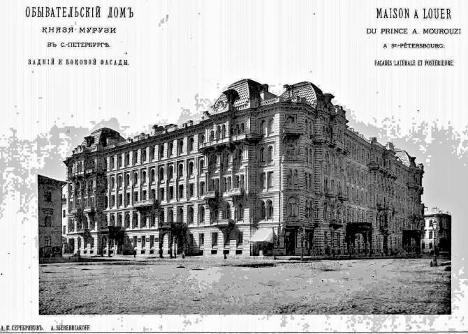
🕌
Загрузите фото: photos/d2s01_muruzi.jpg
'"
alt="Дом Мурузи">
Литейный проспект, 24 · Дом Мурузи
01
Начало маршрута · День II
Дом Мурузи
И. Бродский · «Полторы комнаты»
Литейный проспект, 24
🎙 Аудиогид
Дом Мурузи · И. Бродский
0:00
Перед вами — Дом Мурузи, построенный в 1874–1877 годах. Когда дом открылся, петербуржцы специально приезжали смотреть на него — настолько необычным казался восточный орнамент среди строгой застройки. Ахматова рассказывала Бродскому, что родители возили её смотреть на «это чудо» в пролётке.
До революции здесь снимал квартиру Александр Блок. Это значит, что в одном здании жили сразу два гения — просто в разные десятилетия.
Бродский переехал сюда в 1955 году. Семья занимала комнату и половину комнаты, отгороженную шкафом — «полторы комнаты». В 1964 году отсюда его повезли на суд как «тунеядца». После ссылки вернулся сюда. Ушёл насовсем в 1972-м — в эмиграцию, из которой не вернулся. Сегодня здесь музей «Полторы комнаты».
Загрузите audio/d2s01.mp3 в папку проекта
"
Наши полторы комнаты были частью обширной анфилады... здание представляло собой один из громадных брикетов в так называемом мавританском стиле.
И. А. Бродский · «Полторы комнаты»
Семья Бродских — квартира № 28, 2-й этаж. Поэт прожил здесь 17 лет (1955–1972). В 1964 арестован и отправлен в ссылку. Сегодня — музей «Полторы комнаты».
🚶 Переход · ~10 минут
Дом Мурузи → Тенишевское
0:00
Двигайтесь к Литейному мосту один квартал, поверните на улицу Пестеля налево, затем на Моховую. Справа увидите большое здание классической архитектуры с вывеской Академии театрального искусства — это Тенишевское училище.
◆
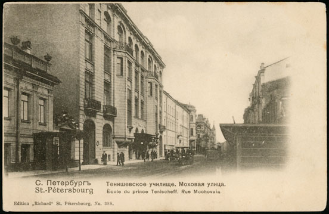
🎓
Загрузите фото: photos/d2s02_tenishev.jpg
'"
alt="Тенишевское">
Моховая, 33 · Тенишевское училище
02
Точка маршрута
Тенишевское училище
В. Набоков · «Дар»
Моховая, 33
🎙 Аудиогид
Тенишевское · В. Набоков
0:00
Моховая, 33. Мало кто знает, что именно отсюда вышли два гения русской литературы — Осип Мандельштам и Владимир Набоков — с разницей в несколько лет.
Школа основана в 1900 году на деньги князя Тенишева — промышленника, вложившего в неё более миллиона рублей. Без розг, без зубрёжки, без сословных различий. Дети аристократов и мещан, православные и евреи учились вместе — в России тех лет это было почти революцией.
Набоков был богатым аристократом среди демократичных одноклассников и чувствовал себя чужим. Но именно здесь начал серьёзно писать стихи. Сегодня здесь Академия театрального искусства — традиция воспитывать творческих людей продолжается.
Загрузите audio/d2s02.mp3 в папку проекта
"
Тенишевское училище отличалось духом равенства, товарищества и взаимного уважения между учителями и учениками.
В. В. Набоков · «Дар»
Основано в 1900 году. Принципы свободы личности. Выпускники: Мандельштам и Набоков. Сегодня — Академия театрального искусства.
🚶 Переход
Тенишевское → Фонтанный дом
0:00
Продолжайте по Моховой до набережной Фонтанки. Поверните налево — вдоль набережной увидите корпуса Шереметевского дворца. Это и есть Фонтанный дом.
◆
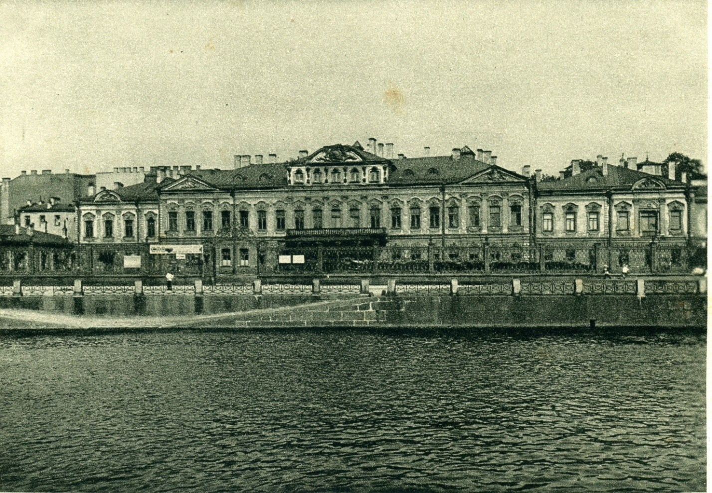
🏛️
Загрузите фото: photos/d2s03_fontanka.jpg
'"
alt="Фонтанный дом">
Набережная Фонтанки, 34 · Фонтанный дом
03
Точка маршрута
Фонтанный дом
А. Ахматова · «Поэма без героя»
Набережная реки Фонтанки, 34
🎙 Аудиогид
Фонтанный дом · А. Ахматова
0:00
Почти тридцать лет здесь прожила Анна Ахматова — с 1924 по 1952 год. Годы сталинского террора, блокады, послевоенных репрессий.
За Ахматовой следили, в квартире предположительно стояли «жучки». Она знала — и всё равно писала, только осторожнее. «Реквием» нельзя было записывать на бумагу: читала строфы подругам, те заучивали наизусть, бумага сжигалась. Стихи существовали только в человеческой памяти.
В 1935 году из этих стен НКВД забрал её мужа и сына Льва Гумилёва. Лев провёл в лагерях около четырнадцати лет. Музей Ахматовой — вход со стороны Литейного, 53.
Загрузите audio/d2s03.mp3 в папку проекта
"
Так под кровлей Фонтанного Дома, Где вечерняя бродит истома С фонарем и связкой ключей, Я аукалась с дальним эхом...
А. А. Ахматова · «Поэма без героя»
Ахматова прожила здесь 1924–1952. Здесь написан «Реквием». В 1935 арестованы муж и сын. Музей — вход: Литейный, 53.
🚶 Переход · ~25 минут
Фонтанный дом → ДИСК
0:00
По набережной Фонтанки идите к Невскому проспекту, затем в сторону Невы. Перейдя Мойку по Зелёному мосту, поверните направо на набережную Мойки. Дом искусств — набережная Мойки, 59, между Зелёным и Красным мостом.
◆
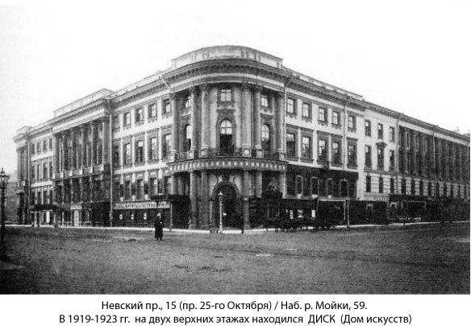
🚢
Загрузите фото: photos/d2s04_disk.jpg
'"
alt="ДИСК">
Набережная Мойки, 59 · «Дом искусств» (ДИСК)
04
Точка маршрута
«Дом искусств» (ДИСК)
В. Ходасевич · «Воспоминания»
Набережная реки Мойки, 59
🎙 Аудиогид
«ДИСК» · В. Ходасевич
0:00
ДИСК открыт в 1919 году по инициативе Горького. Это была попытка спасти культуру от физического уничтожения: в Петрограде голод, холод, тиф, интеллигенция вымирала буквально. Горький выбил у новой власти комнаты в бывшем особняке Елисеева и паёк.
Здесь жили Александр Грин — тот, кто написал «Алые паруса», Мандельштам, Зощенко, Шкловский. Ольга Форш написала об этом роман «Сумасшедший корабль» — название говорит само за себя.
Ходасевич вспоминал: по вечерам в окнах горел свет, и весь дом казался кораблём сквозь тёмную петроградскую зиму. В 1922 году ДИСК разогнали.
Загрузите audio/d2s04.mp3 в папку проекта
"
По вечерам зажигались многочисленные огни в его окнах... и весь он казался кораблем, идущим сквозь мрак, метель и ненастье.
В. Ф. Ходасевич · «Воспоминания»
Открыт в 1919 году. Последний приют Серебряного века. Жили Грин, Мандельштам, Ходасевич, Зощенко, Шкловский. Разогнан осенью 1922 года.
🚶 Переход · ~20 минут
ДИСК → Пушкинский дом (часть 1)
0:00
ДИСК → Пушкинский дом (часть 2)
0:00
Идите к Дворцовой площади, перейдите Дворцовый мост на Васильевский остров. По Университетской набережной идите к Стрелке, затем вдоль до большого жёлтого здания с портиком — Пушкинский дом.
◆
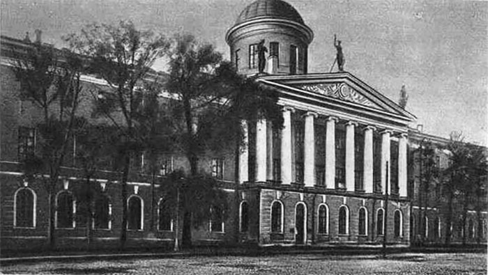
📚
Загрузите фото: photos/d2s05_pushkin.jpg
'"
alt="Пушкинский дом">
Набережная Макарова, 4 · Пушкинский дом (ИРЛИ)
05
Точка маршрута
Пушкинский дом
А. Битов · «Пушкинский дом»
Набережная Макарова, 4
🎙 Аудиогид
Пушкинский дом · А. Битов
0:00
Институт русской литературы — Пушкинский дом. Здание 1829 года, настоящий сейф русской культуры. Черновики Пушкина с его рисунками на полях, рукописи Толстого, Достоевского, Ахматовой — более 400 000 единиц хранения.
В годы блокады сотрудники не эвакуировались. Оставались в осаждённом городе и охраняли рукописи. Некоторые умерли от голода — но архивы сохранили.
Андрей Битов написал роман «Пушкинский дом» в 1971 году, но опубликовать в СССР не мог. Роман вышел сначала на Западе, в России официально — только в 1987-м. Битов сделал это здание символом всей русской культуры: великой, тяжёлой, живущей в вечном противостоянии с властью.
Загрузите audio/d2s05.mp3 в папку проекта
"
Мы склонны в этой повести, под сводами Пушкинского дома, следовать освященным, музейным традициям, не опасаясь перекличек и повторений.
А. Г. Битов · «Пушкинский дом»
ИРЛИ РАН, 1829 год. 400 000+ рукописей. В блокаду сотрудники охраняли архивы ценой жизни. В романе Битова — символ всей русской культуры.
🚶 Переход · ~25–30 минут
Пушкинский дом → Кшесинская (часть 1)
0:00
Пушкинский дом → Кшесинская (часть 2)
0:00
Пушкинский дом → Кшесинская (часть 3)
0:00
Вернитесь к Стрелке, перейдите Биржевой мост на Петроградскую сторону. По Кронверской набережной (справа — Петропавловская крепость) дойдите до Кронверкского проспекта. Величественное здание на углу Кронверкского и улицы Куйбышева — особняк Кшесинской.
Один из красивейших образцов северного модерна. Особняк балерины Кшесинской (1904–1906) — воплощение роскоши: зимний сад, электрическое освещение, телефон. Кшесинская была фавориткой будущего Николая II. Особняк ей подарил великий князь Андрей Владимирович, за которого она вышла замуж в эмиграции.
В феврале 1917-го она бежала в одном платье. Дом заняли большевики — и уже в апреле с этого балкона выступал Ленин, вернувшийся из эмиграции в «пломбированном вагоне».
Красота, которую строили годами, за одну ночь превратилась в политический штаб. Эта метафора точнее всего описывает конец Серебряного века. Сегодня здесь Музей политической истории — тот самый балкон сохранился.
Загрузите audio/d2s06.mp3 в папку проекта
"
Дом Кшесинской, за дрыгоножество подаренный, нынче — рабочая блузница.
В. В. Маяковский · «Владимир Ильич Ленин»
Особняк Кшесинской (1904–1906) — эталон северного модерна. После февраля 1917 — штаб большевиков, с балкона выступал Ленин. Сегодня — Музей политической истории России.
🚶 Переход · ~20 минут
Кшесинская → Летний сад
0:00
Перейдите Троицкую площадь, перейдите Троицкий мост. После моста поверните направо на набережную Лебяжьей канавки — она выведет прямо к Летнему саду. Вход в сад со стороны набережной Мойки.
◆
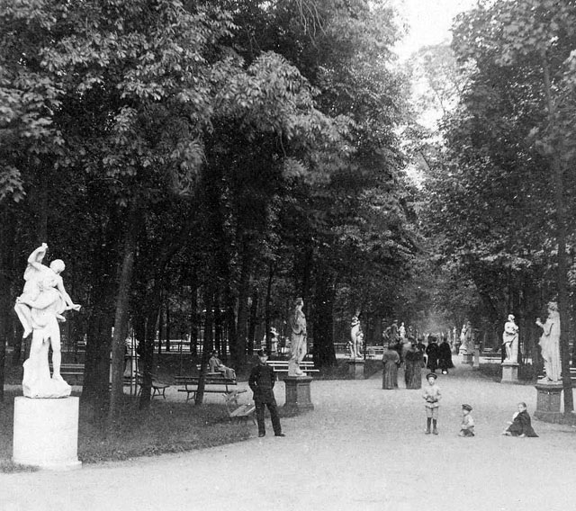
🌿
Загрузите фото: photos/d2s07_summer.jpg
'"
alt="Летний сад">
Летний сад · набережная Лебяжьей канавки
07
Точка маршрута
Летний сад
Андрей Белый · «Петербург»
Набережная Лебяжьей канавки
🎙 Аудиогид
Летний сад · Андрей Белый
0:00
Вы стоите у ворот Летнего сада — одного из старейших парков России, заложенного Петром Великим в 1704 году. Изначально здесь был «живой кабинет» царя: фонтаны, лабиринты, менажерия с птицами, оранжереи с заморскими растениями.
Беломраморные статуи, которые вы видите — копии. Оригиналы из Венеции пришлось убрать: петербургский климат оказался слишком жесток. Андрей Белый превратил эту деталь в метафору: статуи, укрытые в ящики, похожие на гробы. Время точит всё — и мрамор, и людей, и целые эпохи.
Для Ахматовой этот сад был почти сакральным местом. В одном из стихотворений она написала, что хотела бы, чтобы на её памятнике был изображён не портрет — а просто этот сад. Без имени.
Загрузите audio/d2s07.mp3 в папку проекта
"
Хмурился Летний сад. Летние статуи поукрывались под досками; серые доски являли в длину свою поставленный гроб...
Андрей Белый · «Петербург»
Основан Петром I в 1704 году. Для поэтов Серебряного века — сакральное «сердце Петербурга». Ахматова приходила сюда всю жизнь.
🚶 Переход · ~40 минут
Летний сад → Лиговка (часть 1)
0:00
Летний сад → Лиговка (часть 2)
0:00
Выйдите из сада к Пантелеймоновскому мосту, идите по Невскому до Владимирского проспекта, затем по Свечному переулку до Лиговского проспекта. Наша цель — библиотека «Лиговская» (Лиговский, 99).
◆
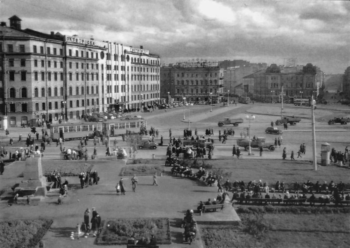
🏙️
Загрузите фото: photos/d2s08_ligov.jpg
'"
alt="Лиговский проспект">
Лиговский проспект · Библиотека «Лиговская»
08
Точка маршрута
Лиговский проспект
С. Довлатов · «Филиал»
Лиговский проспект, 99
🎙 Аудиогид
Лиговский пр. · С. Довлатов
0:00
Довлатов жил в нескольких минутах отсюда — на улице Рубинштейна, 23. Но «Лиговка» присутствует в его прозе как особое пространство: живое, грубоватое, непарадное.
Довлатов работал экскурсоводом в Пушкинских горах, охранником в психиатрической больнице, служил в лагерной охране в Коми. Весь этот опыт «изнанки» сформировал его взгляд: он писал о людях, которых принято не замечать — с горькой нежностью и без осуждения.
Довлатов эмигрировал в 1979 году, умер в Нью-Йорке в 1990-м в 48 лет. Его книги при жизни в СССР почти не издавались. Сегодня библиотека «Лиговская» проводит ежегодные «Довлатовские чтения» — лучший способ вернуть писателя туда, откуда его выгнали.
Загрузите audio/d2s08.mp3 в папку проекта
"
Я шел за этой женщиной до самой Лиговки.
С. Д. Довлатов · «Филиал»
В прозе Довлатова — символ непарадного Ленинграда. Сам писатель жил на ул. Рубинштейна, 23. Эмигрировал в 1979, умер в 1990. Библиотека «Лиговская» — центр «Довлатовских чтений».
🚶 Переход · ~60 минут
Лиговка → Квартира Блока (часть 1)
0:00
Лиговка → Квартира Блока (часть 2)
0:00
Лиговка → Квартира Блока (часть 3)
0:00
По Разъезжей улице идите до набережной Фонтанки, перейдите по мосту Ломоносова. Затем через Сенную площадь, набережную канала Грибоедова, Львиный переулок — на улицу Декабристов. Идите прямо мимо Юсуповского дворца и Мариинского театра до реки Пряжки.
◆
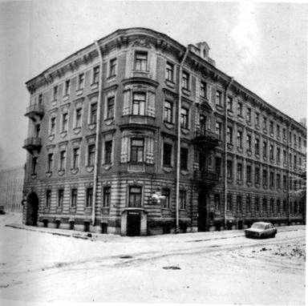
✍️
Загрузите фото: photos/d2s09_blok.jpg
'"
alt="Квартира Блока">
Улица Декабристов, 57 · Квартира-музей Александра Блока
09
Финал · День II
Квартира Александра Блока
А. Ахматова · «Я пришла к поэту в гости»
Улица Декабристов, 57
🎙 Аудиогид
Квартира Блока · А. Ахматова
0:00
Здесь с 1912 по 1921 год жил Александр Блок — человек, которого современники называли «солнцем русской поэзии». Ахматова вспоминала: идти к нему в гости было всё равно что идти на аудиенцию.
Именно здесь в январе 1918-го, за несколько дней, Блок написал поэму «Двенадцать» — самое спорное произведение о революции. Сам говорил, что написал её «в состоянии транса».
Блок умер здесь 7 августа 1921 года в 40 лет. Официальная причина — болезнь сердца. Но все, кто его знал, говорили иначе: он умер от того, что революция, которую воспел, оказалась совсем не той, о которой мечтал. Это один из самых душевных музеев города.
Загрузите audio/d2s09.mp3 в папку проекта
"
Мне же лучше, осторожной, В них и вовсе не глядеть. ...В доме сером и высоком У морских ворот Невы.
А. А. Ахматова · «Я пришла к поэту в гости»
Блок жил здесь с 1912 до смерти в 1921. Написаны «Двенадцать» и «Скифы». Сегодня — первый и главный музей Блока в России.
🎙 Завершение · День II
Завершение · День II
0:00
Таким образом, мы с вами прошли два маршрута. В первый день Серебряный век предстал громким, театральным — с подвалами, кабаре и башенными ночами. Во второй день мы увидели другую сторону: комнаты, где поэты оставались наедине с эпохой.
Петербург XX века — не просто фон для стихов. Он сам был собеседником, свидетелем, а подчас и мучителем тех, кто его населял. И сегодня, когда мы стоим на тех же камнях, мы можем услышать их голоса — если, конечно, готовы вслушиваться.
Спасибо, что прошли этот путь вместе с нами. Надеемся, город стал для вас чуть роднее, а искусство — чуть ближе.